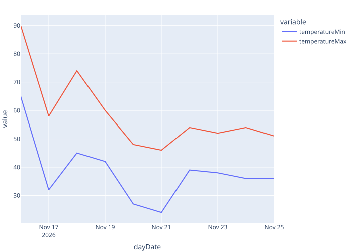
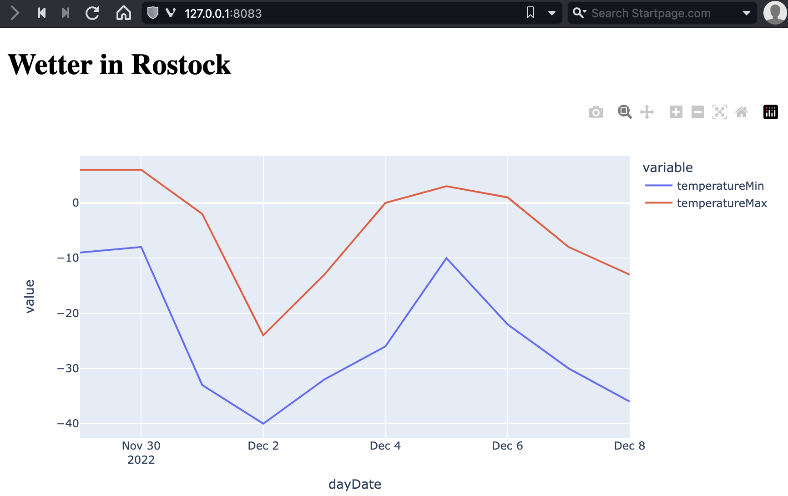

def main():
print("This is the main function")Modularisierung
Write programs that do one thing and do it well.
— Doug McIlroy
TL;DR
Größere Programme verteilen wir auf Module und Packages: eine Datei pro Klasse, Thema oder Aufgabenbereich, Unterpakete in eigenen Ordnern. KI-Werkzeuge verfehlen diese Granularität oft und erzeugen eine riesige Datei, sehr viele winzige Dateien oder tief verschachtelte Ordner. Wir lernen, wie Python Module mit main() und import startet und findet und wie wir die Standardbibliothek und Packages aus PyPI (Python Package Index) nutzen.
Warum Module
Module dienen der Strukturierung
Größere Programme enthalten oft dutzende Klassen mit hunderten Funktionen und vielen tausend Zeilen Code. Hier wird es sehr schnell schwer einen Überblick zu behalten, wenn alle Klassen in einer Datei definiert sind. Insbesondere wenn verschiedene Programmierer an verschiedenen Stellen im Programm arbeiten, kommt es dann sehr schnell zu Versionskonflikten, wenn Leute an ähnlichen Dateien arbeiten.
Um dies organisiert und übersichtlich zu halten, wird Code in mehrere Dateien mit der Erweiterung .py aufgespalten. Dabei ist es üblich jeweils eine Datei
- pro Klasse, wenn Klassen definiert werden
- pro Thema, wenn Hilfsfunktionen definiert werden (z.B. Mathematik-Funktionen, …)
- pro Aufgabenbereich, wenn (z.B. Laden von Daten getrennt von deren Verarbeitung. So kann man z.B. später andere Verarbeitungsschritte definieren und das Laden wiederverwenden)
Modulgrenzen sind Architekturentscheidungen: wo ein Modul endet und das nächste beginnt, legt fest, wie KI-generierter Code in das Projekt eingebettet wird.
Speichern wir jede Klasse der Geometrieelemente aus dem Teil der Klassendefinition aus der letzten Vorlesung so hätten wir dann z.B. eine Projektstruktur entsprechend:
- 📁 geometry
- 📄 ImmutablePoint.py
- 📄 Point.py
- 📄 Line.py
- 📄 Pentagon.py
- 📄 Polygon.py
- 📄 Tetragon.py
- 📄 Triangle.py
Dabei enthält jede Datei nur den Code der gleichnamigen Klasse, auch wenn dies nur wenige Zeilen sind, wie im Fall der Klassen Triangle, Tetragon und Pentagon. Entscheidend ist, dass wenn ein Programmierer nach dem Code für eine Klasse sucht, er genau sieht in welcher Datei dieser zu finden ist und nicht groß suchen muss.
Noch größere Projekte gliedern wir zusätzlich in Unterpakete, indem wir weitere Unterverzeichnisse anlegen. So wollen wir z.B. alle generischen Klassen für Punkte in das Verzeichnis points gruppieren und alle geometrischen Formen in das Verzeichnis shapes. So lassen sich größere Projekte gut strukturieren.
Die Summe aller Module formt dann ein Package. In diesem Fall das Package geometry, welches wir in verschiedenen Implementierungen wieder verwenden können.
- 📁 geometry
- 📁 points
- 📁 shapes
- 📄 Line.py
- 📄 Pentagon.py
- 📄 Polygon.py
- 📄 Tetragon.py
- 📄 Triangle.py
Ein Projekt hat meist eine zentrale Datei, die die Funktion main() enthält und die übrigen Module importiert. In der allgemeinen Struktur ist das main.py mit den Modulen module1, module2 und helpers, im Stadtprojekt city.py mit den Modulen buildings, streets und geometry. Wie main() und import genau funktionieren, sehen wir weiter unten.
Die richtige Granularität
Drei Fehlformen bei KI-generiertem Code
Lassen wir eine KI ein Projekt wie das Geometrie-Package schreiben, bekommen wir nicht automatisch eine gute Aufteilung. Die Hörsaalfrage zu Beginn zeigt vier mögliche Strukturen für dieselben sieben Klassen; nur B gliedert sie nach dem Muster aus dem letzten Abschnitt. Die drei anderen sind typische Fehlformen. Bei Struktur A stehen alle Klassen in einer einzigen Datei, die mit dem Projekt immer weiter wächst. Bei Struktur C bekommt jede Methode ihre eigene Datei; für die sieben Geometrieklassen wären das 15 Dateien mit jeweils wenigen Zeilen und jede braucht ihre eigenen Imports. Bei Struktur D bekommt jede Datei einen eigenen Ordner, sodass Triangle.py erst nach fünf Ordnerebenen erreicht ist und die Importpfade entsprechend lang werden.
Gegen diese Fehlformen helfen einfache Faustregeln. Die Struktur folgt der Objektorientierung mit einer Datei pro Klasse, Hilfsfunktionen kommen in eine Datei pro Thema und Aufgabenbereiche wie Laden, Verarbeiten und Darstellen liegen in getrennten Modulen. Zusammengehöriges bleibt zusammen: Eine Klasse steht nie in mehreren Dateien, auch nicht, wenn die Datei nur wenige Zeilen hat wie Triangle.py. Unterpakete bekommen eigene Unterordner, und eine Datei hat etwa 1000 Zeilen als Richtwert. Die gewünschte Gliederung nennen wir schon im Prompt und prüfen die erzeugte Struktur anschließend gegen diese Regeln.
Wenn eine KI Code für ein Projekt erzeugt, entsteht er in der Regel auf Modulebene: Ein Prompt wie „ein Modul, das Sensordaten verarbeitet“ liefert eine .py-Datei. Entscheidend ist, dass diese Datei ein klares öffentliches Interface hat, also die Funktionen und Klassen, die andere Module aufrufen dürfen. Interne Helfer werden mit führendem Unterstrich als privat markiert (nur eine Konvention, Python erzwingt sie nicht) und das Modul importiert nur, was es tatsächlich braucht.
Damit ist die Modulgrenze eine Architekturgrenze. Vor dem Übernehmen eines generierten Moduls stellen wir drei Fragen: Was gehört in dieses Modul? Was wird zwischen den Modulen ausgetauscht? Und passt die Datei an die Stelle im Projekt, an der sie liegen soll?
Als Demo formulieren wir die Anforderung als Prompt: Das Modul sensor_processing.py soll eine Funktion clean_readings enthalten, die Werte außerhalb von 2σ entfernt. Die Typangabe list[float] legt fest, dass die Funktion eine Liste aus Fließkommazahlen erwartet und wieder eine solche Liste zurückgibt. Die KI erzeugt daraufhin die folgende Datei.
# sensor_processing.py [KI-generiert]
import statistics
def clean_readings(values: list[float]) -> list[float]:
if len(values) < 2:
return values
mean = statistics.mean(values)
std = statistics.stdev(values)
return [v for v in values if abs(v - mean) <= 2 * std]
def _is_outlier(value: float, mean: float, std: float) -> bool:
return abs(value - mean) > 2 * stdBeim Prüfen des generierten Moduls vergleichen wir zuerst das Interface mit dem Prompt: Funktionsname und Typangaben stimmen, _is_outlier ist privat markiert und es wird nur statistics importiert. Das Modul besteht den Interface-Check, hat aber zwei Schwächen. Erstens wird der Helfer _is_outlier von clean_readings nie aufgerufen, er ist toter Code. Zweitens liegt bei n ≤ 5 Werten mit der Stichproben-Standardabweichung kein Wert außerhalb von 2σ (der größtmögliche Abstand beträgt (n−1)/√n σ, bei n = 5 also rund 1,79σ). Der Aufruf clean_readings([20.0, 20.1, 19.9, 20.0, 99.0]) liefert deshalb alle fünf Werte zurück. Beides fällt nur auf, wenn wir den Code lesen und mit eigenen Testwerten ausführen. Die Modulstruktur ist außerdem Teil der Review-Checkliste in 08b_CodeReview.
Startpunkt und Import
Die Funktion main() als Startpunkt
Wenn Code über mehrere Dateien verteilt ist, ist unklar, wo das Programm beginnt. Python führt die gestartete Datei von oben nach unten aus. Üblich ist es, den Programmablauf in eine Funktion main() zu schreiben, die den Startpunkt des Programms markiert. Diese Konvention gibt es in vielen Programmiersprachen; in Python ist main aber nur ein gewöhnlicher Funktionsname.
In der Regel hat main() keine Parameter; Kommandozeilenargumente liest das Programm über sys.argv ein.
Allerdings möchte man vermeiden, dass die Funktion main() auch aufgerufen wird, wenn die Python-Datei zum Beispiel als Bibliothek eingebunden wird, wo man nur an den Funktionen interessiert ist. Deshalb nutzt man am Ende einer Datei mit einer main()-Funktion die folgende Verzweigung.
if __name__ == "__main__":
main()This is the main functionSie nutzt aus, dass der Wert der Standardvariable __name__ in der Hauptdatei immer '__main__' lautet. In einer importierten Datei ist __name__ dagegen der Modulname und eben nicht '__main__'.
Für den Aufbau einer Datei mit main() gilt eine einfache Regel: Vor main() stehen nur Imports, Konstanten sowie Funktions- und Klassendefinitionen. Globale Variablen und Funktionsaufrufe vermeiden wir an dieser Stelle, weil sie beim Import der Datei sofort ausgeführt würden und Nebeneffekte hätten. So bleibt der Programmfluss übersichtlich, das Programm ist einfach zu ändern und lässt sich besser wiederverwenden.
Importieren von Modulen
Um zu vermeiden, dass ständig unnötiger Code geladen wird, lädt Python diesen Code nicht automatisch. Wollen wir also den Code in unseren Dateien, Modulen und Packages nutzen, so müssen wir Python vorher anweisen, diesen zu laden. Dieses Importieren weist man mit dem Befehl import an.
Ein einfacher Import ist der Import ganzer Module oder Packages. Dies geschieht, indem wir import und danach den Namen schreiben.
import geometry.points.ImmutablePoint
import geometry.shapes.Line
def main():
point_1 = geometry.points.ImmutablePoint.ImmutablePoint(x=54.083336, y=12.108811)
point_2 = geometry.points.ImmutablePoint.ImmutablePoint(y=12.094167, x=54.075211)
linie_1 = geometry.shapes.Line.Line(start=point_1, end=point_2)
print(f"Die Länge der Linie zwischen Punkt 1 und 2 ist: {linie_1.length()}")
if __name__ == "__main__":
main()Die Länge der Linie zwischen Punkt 1 und 2 ist: 0.016747010509340444Der Nachteil dieses Imports ist, dass wir für Klassen in Untermodulen den kompletten Pfad angeben müssen. In dem Beispiel oben also geometry.points.ImmutablePoint.ImmutablePoint.
Deshalb importiert man meist einzelne Module, indem man den Pfad eines Moduls angibt, wie zum Beispiel geometry.points.ImmutablePoint. Hierbei kann man den importierten Modulen auch neue Namen geben, wie point oder line im Beispiel unten.
import geometry.points.ImmutablePoint as point
import geometry.shapes.Line as line
def main():
point_1 = point.ImmutablePoint(x=54.083336, y=12.108811)
point_2 = point.ImmutablePoint(y=12.094167, x=54.075211)
linie_1 = line.Line(start=point_1, end=point_2)
print(f"Die Länge der Linie zwischen Punkt 1 und 2 ist: {linie_1.length()}")
if __name__ == "__main__":
main()Die Länge der Linie zwischen Punkt 1 und 2 ist: 0.016747010509340444Alternativ lassen sich auch Teile eines Moduls mit dem Platzhalter * und dem Befehl from importieren. Alle Elemente werden mit dem Platzhalter * importiert, auch die Importe des Moduls selbst (hier math); das kann zu Namenskonflikten führen. Deshalb gibt man meist einzelne Namen wie die Klasse Line direkt an, wie im folgenden Beispiel.
Python sucht Module nicht “magisch”, sondern entlang seiner Importpfade. Diese stehen zur Laufzeit in sys.path. Dazu gehören typischerweise
- das Verzeichnis des gestarteten Programms (in Notebooks das aktuelle Arbeitsverzeichnis)
- die installierten Pakete der Python-Umgebung
- weitere Pfade, die z.B. durch Tools oder Umgebungsvariablen ergänzt wurden
Damit aus einem Verzeichnis wie geometry/points/ ein importierbares Package wird, muss Python die Struktur als Package erkennen. Seit Python 3.3 erkennt Python auch Verzeichnisse ohne __init__.py als Package (Namespace-Package). Für eigene Packages ist eine Datei __init__.py trotzdem empfehlenswert, um das Package ausdrücklich zu markieren und zu konfigurieren.
Wichtig ist die Unterscheidung:
- Verzeichnis: nur eine Ordnerstruktur auf der Festplatte
- Package: ein Verzeichnis, das Python als importierbaren Namensraum behandelt
- Modul: eine konkrete Python-Datei wie
ImmutablePoint.py
Wenn also geometry im Suchpfad liegt, kann Python ein Modul wie geometry.points.ImmutablePoint finden. Liegt das Projekt nicht im Suchpfad oder ist die Package-Struktur unklar, schlägt der Import fehl.
from geometry.points.ImmutablePoint import *
from geometry.shapes.Line import Line
def main():
point_1 = ImmutablePoint(x=54.083336, y=12.108811)
point_2 = ImmutablePoint(y=12.094167, x=54.075211)
linie_1 = Line(start=point_1, end=point_2)
print(f"Die Länge der Linie zwischen Punkt 1 und 2 ist: {linie_1.length()}")
if __name__ == "__main__":
main()Die Länge der Linie zwischen Punkt 1 und 2 ist: 0.016747010509340444Vorhandene Packages nutzen
Standardbibliothek
Python beinhaltet viele Standardpakete für typische Aufgaben. Für die Bau- und Umweltinformatik sind die folgenden am sinnvollsten:
| Package | Aufgabe |
|---|---|
| collections | Komplexere Datentypen zum Zählen und Gruppieren |
| http | Funktionen des HTTP-Internetprotokolls wie Web-Server |
| json | Funktionen, um Daten im JSON-Textformat zu speichern |
| logging | Funktionen um Logs zu schreiben |
| math | Mathematische Funktionen |
| os | Funktionen, um Dateien und Verzeichnisse zu finden und zu verwalten |
| pickle | Funktionen, um Objekte binär abzuspeichern (nur aus vertrauenswürdigen Quellen laden) |
| pprint | print-Funktionen um Objekte schöner (pretty) auszugeben |
| random | Funktionen zum Erzeugen von Zufallszahlen |
| re | Funktionen für Reguläre Ausdrücke um Text zu suchen |
| sys | Funktionen um Systeminformationen zu erhalten |
| time | Funktionen für Zeitangaben und Zeitmessung |
| datetime | Funktionen für Datums- und Zeitangaben |
| pathlib | Pfade zu Dateien und Verzeichnissen als Objekte |
| timeit | Funktionen um die Performance von Funktionen zu testen |
| traceback | Funktionen um den Stack aufzulisten |
| urllib | Funktionen, um URLs im Internet zu laden und zu verarbeiten |
Von der Liste haben wir die Bibliotheken math und time schon kennengelernt und benutzt; logging, timeit und traceback folgen in späteren Kapiteln. Die anderen Pakete bieten allerdings weitere sinnvolle Funktionen.
Wollen wir zum Beispiel auflisten, was in einem Verzeichnis liegt, oder prüfen, ob ein Pfad eine Datei ist, so nutzen wir das Paket os.
import os
sorted(os.listdir("geometry"))['points', 'shapes']os.path.isfile("geometry/shapes/Line.py")TrueViele Webseiten bieten Programmierschnittstellen an, so genannte APIs, da diese APIs auch von den eigenen Webseiten genutzt werden, um Daten nachzuladen, die auf der Webseite angezeigt werden. Die APIs nutzen meist das JSON-Format um Daten auszutauschen. Dies ist ein textbasiertes Dateiformat, das in Python sehr stark dem dict-Datentyp ähnelt. JSON kennt Objekte (in Python dict), Listen, Texte, Zahlen, Wahrheitswerte und null (in Python None); andere Python-Typen wie Mengen oder Datumsangaben muss man vorher umwandeln.
Wir möchten zum Beispiel die Wetterdaten einer Wetterstation in Deutschland analysieren. Diese Daten bekommen wir beim Deutschen Wetterdienst. Diese Daten kann man sich auch von der API herunterladen. Hierfür braucht man die ID (Identifikationsnummer) einer Wetterstation, die im Stationskatalog des DWD steht. Wir nehmen als Beispiel die Station Rostock-Stadt mit der ID P0175.
Dann kann man die Wetterdaten mit Python mit Hilfe des Paketes urllib von der API laden. Das JSON-Format können wir mit dem json Paket verarbeiten. Wir laden dazu zuerst vom Deutschen Wetterdienst ein binäres Datenpaket vom Datentyp bytes. Dieses konvertieren wir mit der Funktion loads aus dem json Paket in ein Python dict. Um das schöner lesbar auszugeben, nutzen wir die Funktion pprint aus dem Paket pprint (pretty-print).
import urllib.request
import json
import pprint
stationID='P0175' # Rostock-Stadt
with urllib.request.urlopen(f'https://app-prod-ws.warnwetter.de/v30/stationOverviewExtended?stationIds={stationID}') as f:
data=f.read() # Dies gibt uns einen binären Datentyp zurück
wetter=json.loads(data) # Wir konvertieren den binären Datentyp in ein dict
pprint.pprint(wetter, indent=2, compact=True){ 'P0175': { 'days': [ { 'dayDate': '2026-11-16',
'icon': 7,
'icon1': None,
'icon2': None,
'moonPhase': 1,
'moonrise': 1794831580000,
'moonriseOnThisDay': 1794831580000,
'moonset': 1794863685000,
'moonsetOnThisDay': 1794863685000,
'precipitation': 46,
'stationId': None,
'sunrise': 1794811282000,
'sunriseOnThisDay': 1794811282000,
'sunset': 1794841847000,
'sunsetOnThisDay': 1794841847000,
'sunshine': 40,
'temperatureMax': 90,
'temperatureMin': 68,
'windDirection': 2180,
'windGust': 408,
'windSpeed': 148},
{ 'dayDate': '2026-11-17',
'icon': 7,
'icon1': None,
'icon2': None,
'moonPhase': 2,
'moonrise': 1794918676000,
'moonriseOnThisDay': 1794918676000,
'moonset': 1794954705000,
'moonsetOnThisDay': 1794954705000,
'precipitation': 33,
'stationId': None,
'sunrise': 1794897795000,
'sunriseOnThisDay': 1794897795000,
'sunset': 1794928158000,
'sunsetOnThisDay': 1794928158000,
'sunshine': 1010,
'temperatureMax': 63,
'temperatureMin': 36,
'windDirection': 1690,
'windGust': 315,
'windSpeed': 93},
{ 'dayDate': '2026-11-18',
'icon': 7,
'icon1': None,
'icon2': None,
'moonPhase': 2,
'moonrise': 1795005654000,
'moonriseOnThisDay': 1795005654000,
'moonset': 1795045749000,
'moonsetOnThisDay': 1795045749000,
'precipitation': 81,
'stationId': None,
'sunrise': 1794984306000,
'sunriseOnThisDay': 1794984306000,
'sunset': 1795014471000,
'sunsetOnThisDay': 1795014471000,
'sunshine': 0,
'temperatureMax': 82,
'temperatureMin': 45,
'windDirection': 2390,
'windGust': 537,
'windSpeed': 204},
{ 'dayDate': '2026-11-19',
'icon': 7,
'icon1': None,
'icon2': None,
'moonPhase': 2,
'moonrise': 1795092583000,
'moonriseOnThisDay': 1795092583000,
'moonset': 1795136903000,
'moonsetOnThisDay': None,
'precipitation': 62,
'stationId': None,
'sunrise': 1795070816000,
'sunriseOnThisDay': 1795070816000,
'sunset': 1795100786000,
'sunsetOnThisDay': 1795100786000,
'sunshine': 0,
'temperatureMax': 61,
'temperatureMin': 40,
'windDirection': 3220,
'windGust': 315,
'windSpeed': 111},
{ 'dayDate': '2026-11-20',
'icon': 4,
'icon1': None,
'icon2': None,
'moonPhase': 2,
'moonrise': 1795179524000,
'moonriseOnThisDay': 1795179524000,
'moonset': 1795136903000,
'moonsetOnThisDay': 1795136903000,
'precipitation': 0,
'stationId': None,
'sunrise': 1795157325000,
'sunriseOnThisDay': 1795157325000,
'sunset': 1795187104000,
'sunsetOnThisDay': 1795187104000,
'sunshine': 0,
'temperatureMax': 51,
'temperatureMin': 31,
'windDirection': 3060,
'windGust': 408,
'windSpeed': 204},
{ 'dayDate': '2026-11-21',
'icon': 4,
'icon1': None,
'icon2': None,
'moonPhase': 3,
'moonrise': 1795266551000,
'moonriseOnThisDay': 1795266551000,
'moonset': 1795228278000,
'moonsetOnThisDay': 1795228278000,
'precipitation': 0,
'stationId': None,
'sunrise': 1795243833000,
'sunriseOnThisDay': 1795243833000,
'sunset': 1795273425000,
'sunsetOnThisDay': 1795273425000,
'sunshine': 0,
'temperatureMax': 51,
'temperatureMin': 29,
'windDirection': 2830,
'windGust': 500,
'windSpeed': 259},
{ 'dayDate': '2026-11-22',
'icon': 4,
'icon1': None,
'icon2': None,
'moonPhase': 3,
'moonrise': 1795353752000,
'moonriseOnThisDay': 1795353752000,
'moonset': 1795319940000,
'moonsetOnThisDay': 1795319940000,
'precipitation': 0,
'stationId': None,
'sunrise': 1795330340000,
'sunriseOnThisDay': 1795330340000,
'sunset': 1795359749000,
'sunsetOnThisDay': 1795359749000,
'sunshine': 0,
'temperatureMax': 53,
'temperatureMin': 36,
'windDirection': 2680,
'windGust': 408,
'windSpeed': 204},
{ 'dayDate': '2026-11-23',
'icon': 4,
'icon1': None,
'icon2': None,
'moonPhase': 3,
'moonrise': 1795441274000,
'moonriseOnThisDay': 1795441274000,
'moonset': 1795411949000,
'moonsetOnThisDay': 1795411949000,
'precipitation': 0,
'stationId': None,
'sunrise': 1795416845000,
'sunriseOnThisDay': 1795416845000,
'sunset': 1795446075000,
'sunsetOnThisDay': 1795446075000,
'sunshine': 0,
'temperatureMax': 42,
'temperatureMin': 28,
'windDirection': 460,
'windGust': 389,
'windSpeed': 148},
{ 'dayDate': '2026-11-24',
'icon': 4,
'icon1': None,
'icon2': None,
'moonPhase': 3,
'moonrise': 1795529383000,
'moonriseOnThisDay': 1795529383000,
'moonset': 1795504091000,
'moonsetOnThisDay': 1795504091000,
'precipitation': 0,
'stationId': None,
'sunrise': 1795503349000,
'sunriseOnThisDay': 1795503349000,
'sunset': 1795532405000,
'sunsetOnThisDay': 1795532405000,
'sunshine': 0,
'temperatureMax': 48,
'temperatureMin': 36,
'windDirection': 990,
'windGust': 352,
'windSpeed': 148},
{ 'dayDate': '2026-11-25',
'icon': 4,
'icon1': None,
'icon2': None,
'moonPhase': 4,
'moonrise': 1795618511000,
'moonriseOnThisDay': 1795618511000,
'moonset': 1795595880000,
'moonsetOnThisDay': 1795595880000,
'precipitation': 0,
'stationId': None,
'sunrise': 1795589851000,
'sunriseOnThisDay': 1795589851000,
'sunset': 1795618739000,
'sunsetOnThisDay': 1795618739000,
'sunshine': 0,
'temperatureMax': 45,
'temperatureMin': 29,
'windDirection': 860,
'windGust': 389,
'windSpeed': 167}],
'forecast1': { 'cloudCoverTotal': [],
'dewPoint2m': [ 65, 64, 61, 58, 57, 54, 50, 46, 42,
37, 32, 28, 25, 24, 23, 22, 23, 24,
25, 26, 27, 26, 25, 23, 23, 22, 22,
25, 25, 25, 27, 27, 29, 32, 35, 37,
42, 46, 50, 55, 59, 61, 63, 64, 63,
61, 59, 56, 52, 48, 46, 44, 40, 40,
38, 34, 33],
'humidity': [ 855, 849, 854, 860, 866, 865, 859,
847, 847, 834, 840, 833, 839, 856,
874, 887, 912, 919, 899, 875, 857,
827, 827, 821, 833, 832, 838, 875,
887, 899, 919, 912, 919, 913, 926,
926, 926, 939, 946, 953, 953, 921,
915, 896, 884, 866, 860, 872, 865,
836, 835, 824, 801, 807, 806, 800,
806],
'icon': [ 32767, 32767, 32767, 32767, 32767, 32767,
32767, 32767, 32767, 32767, 32767, 32767,
32767, 32767, 32767, 32767, 7, 7, 7, 7, 7,
7, 7, 4, 4, 3, 3, 3, 2, 2, 2, 3, 3, 3, 4,
4, 4, 4, 4, 4, 4, 7, 7, 7, 7, 7, 7, 7, 7,
7, 7, 7, 7, 7, 7, 7, 7, 7, 7, 7, 7, 7, 7,
7, 7, 7, 7, 7, 7, 7, 7, 4],
'icon1h': [ 7, 7, 7, 7, 7, 7, 7, 7, 4, 4, 3, 3, 3,
2, 2, 2, 3, 3, 3, 4, 4, 4, 4, 4, 4, 4,
7, 7, 7, 7, 7, 7, 7, 7, 7, 7, 7, 7, 7,
7, 7, 7, 7, 7, 7, 7, 7, 7, 7, 7, 7, 7,
7, 7, 7, 7, 4],
'isDay': [ False, False, False, False, False, False,
False, False, False, False, False, False,
False, False, False, False, False, False,
False, False, False, False, False, False,
False, False, False, False, False, False,
False, False, True, True, True, True,
True, True, True, True, False, False,
False, False, False, False, False, False,
False, False, False, False, False, False,
False, False, True, True, True, True,
True, True, True, True, False, False,
False, False, False, False, False,
False],
'precipitationProbablity': None,
'precipitationProbablityIndex': None,
'precipitationTotal': [ 32767, 32767, 32767, 32767,
32767, 32767, 32767, 32767,
32767, 32767, 32767, 32767,
32767, 32767, 32767, 32767,
2, 2, 1, 2, 2, 2, 1, 0, 0,
0, 0, 0, 0, 0, 0, 0, 0, 0,
0, 0, 0, 0, 0, 0, 0, 2, 4,
7, 5, 6, 5, 4, 3, 2, 2, 2,
4, 6, 7, 5, 7, 7, 6, 5, 4,
4, 2, 2, 2, 2, 2, 2, 1, 1,
3, 0],
'start': 1794783600000,
'stationId': 'P0175',
'sunshine': [ 10, 0, 0, 0, 0, 0, 0, 0, 0, 0, 0, 0,
0, 0, 0, 0, 0, 90, 140, 180, 210, 150,
130, 70, 30, 10, 0, 0, 0, 0, 0, 0, 0,
0, 0, 0, 0, 0, 0, 0, 0, 0, 0, 0, 0, 0,
0, 0, 0, 0, 0, 0, 0, 0, 0, 0, 0],
'surfacePressure': [ 9954, 9955, 9960, 9963, 9967,
9969, 9973, 9975, 9977, 9979,
9979, 9978, 9977, 9973, 9969,
9966, 9961, 9955, 9949, 9940,
9929, 9916, 9904, 9892, 9881,
9874, 9865, 9857, 9850, 9844,
9839, 9830, 9823, 9818, 9812,
9806, 9803, 9799, 9798, 9799,
9796, 9795, 9794, 9793, 9795,
9801, 9803, 9812, 9824, 9833,
9844, 9852, 9861, 9869, 9877,
9883, 9888],
'temperature': [ 32767, 32767, 32767, 32767, 32767,
32767, 32767, 32767, 32767, 32767,
32767, 32767, 32767, 32767, 32767,
32767, 88, 88, 84, 80, 78, 75, 72,
70, 66, 63, 57, 54, 50, 46, 42, 39,
36, 36, 40, 45, 49, 53, 52, 51, 49,
48, 47, 44, 42, 40, 39, 40, 41, 45,
46, 48, 53, 55, 58, 62, 66, 73, 76,
80, 81, 82, 81, 76, 73, 74, 72, 72,
72, 71, 69, 66, 64, 61, 58, 53, 50,
48, 45, 43, 40, 40, 42, 44, 47, 49,
50, 48, 48, 48, 48, 47, 50, 49, 48,
45, 44, 43, 40, 37, 36, 33, 32, 32,
32, 33, 39, 42, 46, 50, 51, 50, 46,
44, 42, 40, 39, 36, 34, 32, 31, 30,
29, 30, 31, 31, 31, 31, 32, 35, 38,
43, 46, 49, 51, 51, 51, 50, 50, 48,
47, 48, 47, 46, 44, 43, 42, 41, 40,
40, 40, 39, 40, 42, 44, 48, 50, 51,
53, 53, 51, 48, 45, 43, 41, 38, 38,
37, 36, 36, 34, 32, 30, 29, 29, 28,
29, 30, 33, 38, 41, 41, 42, 42, 41,
41, 39, 38, 39, 39, 40, 40, 39, 38,
39, 38, 38, 37, 37, 36, 37, 38, 42,
44, 46, 47, 48, 47, 47, 45, 44, 44,
43, 42, 42, 41, 39, 38, 37, 36, 33,
33, 34, 34, 35, 36, 38, 41, 44, 45,
45, 44, 41, 37, 35, 34, 31, 30, 30,
29, 29],
'temperatureStd': [ 0, 0, 0, 0, 0, 0, 0, 0, 0, 0, 0,
0, 0, 0, 0, 0, 0, 9, 9, 9, 9,
10, 9, 9, 9, 10, 10, 10, 10, 11,
12, 13, 13, 12, 12, 11, 12, 12,
12, 12, 10, 11, 10, 11, 10, 9,
9, 9, 9, 10, 10, 10, 9, 10, 11,
12, 12, 12, 12, 13, 12, 12, 12,
11, 11, 11, 11, 10, 9, 10, 10,
11, 11, 11, 12, 12, 12, 13, 13,
13, 12, 12, 12, 12, 13, 12, 14,
14, 13, 14, 14, 14, 14, 14, 14,
14, 14, 14, 15, 15, 14, 15, 15,
15, 16, 15, 15, 14, 14, 12, 12,
11, 12, 12, 12, 12, 12, 12, 12,
12, 14, 15, 14, 15, 15, 15, 15,
16, 16, 15, 15, 14, 14, 14, 14,
14, 14, 14, 13, 13, 13, 13, 13,
13, 14, 14, 14, 15, 15, 15, 15,
15, 16, 15, 14, 14, 13, 14, 14,
14, 14, 15, 14, 14, 15, 15, 15,
15, 14, 14, 13, 14, 15, 15, 16,
16, 17, 17, 17, 16, 15, 16, 15,
15, 15, 16, 16, 17, 17, 17, 17,
17, 18, 18, 18, 18, 18, 17, 17,
17, 18, 17, 18, 17, 17, 17, 17,
17, 17, 17, 16, 16, 16, 16, 15,
15, 15, 14, 15, 15, 16, 15, 15,
15, 16, 16, 15, 15, 15, 15, 16,
16, 16, 16, 16, 17, 17, 18, 18,
19, 19],
'timeStep': 3600000,
'windDirection': None,
'windGust': None,
'windSpeed': None},
'forecast2': { 'cloudCoverTotal': [],
'dewPoint2m': [ 29, 28, 29, 36, 37, 37, 26, 17, 8,
8, 8, 13, 12, 10, 8, 6, 9, 13, 17,
23, 22, 22, 23, 23, 23, 23, 22, 22,
23, 21, 18, 16, 15, 15, 14, 16, 17,
18, 17, 16, 15, 14, 14, 19, 19, 19,
22, 18, 15, 15, 15, 14, 9, 8, 5,
3],
'humidity': [ 845, 887, 925, 926, 926, 926, 851,
826, 813, 843, 837, 792, 764, 797,
819, 836, 861, 880, 880, 850, 815,
821, 838, 862, 881, 887, 868, 821,
810, 844, 868, 868, 886, 905, 892,
838, 838, 862, 856, 849, 849, 849,
843, 826, 821, 838, 868, 862, 861,
874, 861, 808, 780, 825, 836, 830],
'icon': [ 7, 7, 7, 7, 7, 7, 7, 7, 4, 4, 4, 4, 4, 4,
4, 4, 4, 4, 4, 4, 4, 4, 4, 4, 4, 4, 4, 4,
4, 4, 4, 4, 4, 4, 4, 4, 4, 4, 4, 4, 4, 4,
4, 4, 4, 4, 4, 4, 4, 4, 4, 4, 4, 4, 4,
4],
'icon1h': [ 7, 7, 7, 7, 7, 7, 7, 7, 4, 4, 4, 4, 4,
4, 4, 4, 4, 4, 4, 4, 4, 4, 4, 4, 4, 4,
4, 4, 4, 4, 4, 4, 4, 4, 4, 4, 4, 4, 4,
4, 4, 4, 4, 4, 4, 4, 4, 4, 4, 4, 4, 4,
4, 4, 4, 4],
'isDay': [ False, False, False, True, True, False,
False, False, False, False, False, True,
True, False, False, False, False, False,
False, True, True, False, False, False,
False, False, False, True, True, False,
False, False, False, False, False, True,
True, False, False, False, False, False,
False, True, True, False, False, False,
False, False, False, True, True, False,
False, False],
'precipitationProbablity': None,
'precipitationProbablityIndex': None,
'precipitationTotal': [ 2, 3, 8, 8, 10, 11, 11, 9,
0, 0, 0, 0, 0, 0, 0, 0, 0,
0, 0, 0, 0, 0, 0, 0, 0, 0,
0, 0, 0, 0, 0, 0, 0, 0, 0,
0, 0, 0, 0, 0, 0, 0, 0, 0,
0, 0, 0, 0, 0, 0, 0, 0, 0,
0, 0, 0],
'start': 1795042800000,
'stationId': 'P0175',
'sunshine': [ 0, 0, 0, 10, 0, 0, 0, 0, 0, 0, 70,
440, 580, 160, 0, 0, 0, 0, 60, 460,
540, 150, 0, 0, 0, 0, 50, 430, 510,
130, 0, 0, 0, 0, 50, 350, 380, 100, 0,
0, 0, 0, 40, 300, 320, 90, 0, 0, 0, 0,
40, 270, 260, 50, 0, 0],
'surfacePressure': [ 9890, 9888, 9888, 9884, 9887,
9890, 9907, 9922, 9942, 9962,
9992, 10017, 10034, 10055,
10077, 10094, 10114, 10124,
10145, 10161, 10171, 10182,
10187, 10189, 10185, 10183,
10183, 10178, 10174, 10172,
10174, 10173, 10176, 10175,
10181, 10176, 10180, 10186,
10194, 10197, 10197, 10197,
10196, 10198, 10196, 10199,
10202, 10196, 10191, 10186,
10189, 10189, 10183, 10187,
10191, 10189],
'temperature': [],
'temperatureStd': [],
'timeStep': 10800000,
'windDirection': None,
'windGust': None,
'windSpeed': None},
'forecastStart': None,
'threeHourSummaries': None,
'warnings': [ { 'bn': False,
'description': 'Es treten Windböen mit '
'Geschwindigkeiten bis 60 km/h (17 '
'm/s, 33 kn, Bft 7) aus westlicher '
'Richtung auf. In exponierten '
'Lagen muss mit Sturmböen bis 70 '
'km/h (20 m/s, 38 kn, Bft 8) '
'gerechnet werden.',
'descriptionText': 'Es treten Windböen mit '
'Geschwindigkeiten bis 60 km/h '
'(17 m/s, 33 kn, Bft 7) aus '
'westlicher Richtung auf. In '
'exponierten Lagen muss mit '
'Sturmböen bis 70 km/h (20 '
'm/s, 38 kn, Bft 8) gerechnet '
'werden.',
'end': 1794870000000,
'event': 'WINDBÖEN',
'headline': 'Amtliche WARNUNG vor WINDBÖEN',
'instruction': 'Hinweis auf: umherfliegende '
'leichte Gegenstände. \n'
'Handlungsempfehlungen: \n'
'lose Gegenstände sichern; z.B. '
'Zelte und Abdeckungen befestigen',
'instructionHtml': '<b>Hinweis '
'auf:</b><ul><li>umherfliegende '
'leichte '
'Gegenstände</li></ul><br/><b>Handlungsempfehlungen:</b><ul><li>lose '
'Gegenstände '
'sichern</li><li>z.B. Zelte '
'und Abdeckungen '
'befestigen</li></ul>',
'level': 2,
'start': 1794841200000,
'type': 1,
'warnId': '2.49.0.0.276.0.DWD.PVW.1794813240000.cbba8748-3fb7-4ede-be46-698bc53e8cde.MUL'}]}}Externe Pakete installieren und importieren
Die Stärke von Python ist die riesige Auswahl an vorhandenen Paketen. Für die meisten Anwendungszwecke gibt es passende Python-Packages. Die wichtigste öffentliche Quelle dafür ist PyPI, der Python Package Index.
Die Standardbibliothek gehört bereits zu Python und ist sofort verfügbar. Pakete aus PyPI werden zusätzlich in die aktive Python-Umgebung installiert. Genau diese Trennung sollte man im Projekt immer im Blick behalten: “mit Python mitgeliefert” ist nicht dasselbe wie “erst nachinstalliert”.
Die Installation neuer Pakete erfolgt im Terminal, nicht innerhalb eines Python-Skripts. Dafür nutzt man typischerweise einen Befehl wie pip install <paketname>.
Zum Beispiel wollen wir die eben geladenen Wetterdaten anzeigen. Das Beispiel soll vor allem zeigen, wie externe Pakete zusammenspielen. Hierfür nutzen wir:
- zuerst das Paket
pandaszum Erzeugen einer Tabelle aus den Wetterdaten - dann nutzen wir das Paket
plotlyzum Zeichnen eines Diagramms - zuletzt erzeugen wir mit
dashoptional einen kleinen Webserver, der das Diagramm anzeigt
Alle drei installieren wir mit pip, und zwar in einem Aufruf. Mit der Option --quiet reduzieren wir die Ausgabe.
#| echo: true
pip install pandas plotly dash --quietJetzt laden wir die installierten Pakete, wobei man üblicherweise pandas die Abkürzung pd zuweist und Plotly Express die Abkürzung px.
import pandas as pd
import plotly.express as pxNun wandeln wir die tageweise Wettervorhersage days der Daten von der Wetterstation mit der stationID zuerst in eine Tabelle um, da diese von Plotly Express verarbeitet werden kann. Tabellen heißen in Pandas DataFrames. Wir erzeugen also aus der Wettervorhersage eine neue Objektinstanz vom Typ DataFrame via
df = pd.DataFrame(wetter[stationID]['days'])
df| stationId | dayDate | temperatureMin | temperatureMax | precipitation | windSpeed | windGust | windDirection | sunshine | sunrise | ... | moonrise | moonset | moonriseOnThisDay | moonsetOnThisDay | sunriseOnThisDay | sunsetOnThisDay | moonPhase | icon | icon1 | icon2 | |
|---|---|---|---|---|---|---|---|---|---|---|---|---|---|---|---|---|---|---|---|---|---|
| 0 | None | 2026-11-16 | 68 | 90 | 46 | 148 | 408 | 2180 | 40 | 1794811282000 | ... | 1794831580000 | 1794863685000 | 1794831580000 | 1.794864e+12 | 1794811282000 | 1794841847000 | 1 | 7 | None | None |
| 1 | None | 2026-11-17 | 36 | 63 | 33 | 93 | 315 | 1690 | 1010 | 1794897795000 | ... | 1794918676000 | 1794954705000 | 1794918676000 | 1.794955e+12 | 1794897795000 | 1794928158000 | 2 | 7 | None | None |
| 2 | None | 2026-11-18 | 45 | 82 | 81 | 204 | 537 | 2390 | 0 | 1794984306000 | ... | 1795005654000 | 1795045749000 | 1795005654000 | 1.795046e+12 | 1794984306000 | 1795014471000 | 2 | 7 | None | None |
| 3 | None | 2026-11-19 | 40 | 61 | 62 | 111 | 315 | 3220 | 0 | 1795070816000 | ... | 1795092583000 | 1795136903000 | 1795092583000 | NaN | 1795070816000 | 1795100786000 | 2 | 7 | None | None |
| 4 | None | 2026-11-20 | 31 | 51 | 0 | 204 | 408 | 3060 | 0 | 1795157325000 | ... | 1795179524000 | 1795136903000 | 1795179524000 | 1.795137e+12 | 1795157325000 | 1795187104000 | 2 | 4 | None | None |
| 5 | None | 2026-11-21 | 29 | 51 | 0 | 259 | 500 | 2830 | 0 | 1795243833000 | ... | 1795266551000 | 1795228278000 | 1795266551000 | 1.795228e+12 | 1795243833000 | 1795273425000 | 3 | 4 | None | None |
| 6 | None | 2026-11-22 | 36 | 53 | 0 | 204 | 408 | 2680 | 0 | 1795330340000 | ... | 1795353752000 | 1795319940000 | 1795353752000 | 1.795320e+12 | 1795330340000 | 1795359749000 | 3 | 4 | None | None |
| 7 | None | 2026-11-23 | 28 | 42 | 0 | 148 | 389 | 460 | 0 | 1795416845000 | ... | 1795441274000 | 1795411949000 | 1795441274000 | 1.795412e+12 | 1795416845000 | 1795446075000 | 3 | 4 | None | None |
| 8 | None | 2026-11-24 | 36 | 48 | 0 | 148 | 352 | 990 | 0 | 1795503349000 | ... | 1795529383000 | 1795504091000 | 1795529383000 | 1.795504e+12 | 1795503349000 | 1795532405000 | 3 | 4 | None | None |
| 9 | None | 2026-11-25 | 29 | 45 | 0 | 167 | 389 | 860 | 0 | 1795589851000 | ... | 1795618511000 | 1795595880000 | 1795618511000 | 1.795596e+12 | 1795589851000 | 1795618739000 | 4 | 4 | None | None |
10 rows × 21 columns
Nun plotten wir die Daten df als Liniendiagramm mit Hilfe von Plotly, wobei wir als x-Achse das Datum wählen (dayDate) und als y-Achse die minimale Temperatur temperatureMin und maximale Temperatur temperatureMax.
fig=px.line(df, x="dayDate", y=["temperatureMin", "temperatureMax"])
fig.show(renderer="svg")
Optional können wir dieses Diagramm anschließend in einer Webseite auf einem Webserver anzeigen. Hier nutzen wir das Paket dash, das erlaubt, eine Webseite mit Python-Befehlen zu erzeugen und darin interaktive Diagramme von Plotly anzuzeigen.
import dash
app = dash.Dash()Dann erzeugen wir eine Webseite mit einer Überschrift (H1), welche den Plot als Graph enthält.
app.layout = dash.html.Div(children = [
dash.html.H1(children='Wetter in Rostock'),
dash.dcc.Graph(id="wetter", figure=fig)
])Und starten den Webserver.
app.run()Dies startet einen Webserver, auf den wir in einem Browser unter http://127.0.0.1:8050/ zugreifen können. Er zeigt eine Webseite mit einem interaktiven Diagramm der Wetterdaten.

Python-Ökosystem: Standardbibliothek und PyPI
Ein großer Teil der Stärke von Python liegt im Zusammenspiel aus Standardbibliothek und externer Paketwelt. Die Standardbibliothek deckt viele grundlegende Aufgaben ab, etwa Dateizugriffe, JSON-Verarbeitung oder mathematische Funktionen. PyPI erweitert dieses Fundament um spezialisierte Bibliotheken für Datenanalyse, Visualisierung, Webentwicklung, Geometrie, Machine Learning und vieles mehr.
Für die Projektarbeit ist diese Unterscheidung wichtig:
- Standardbibliothek: sofort nach der Python-Installation nutzbar
- PyPI-Pakete: müssen pro Umgebung installiert und versioniert werden
Gerade in Teamprojekten und bei KI-generiertem Code sollte man deshalb immer prüfen, ob ein Import schon durch Python verfügbar ist oder ob die Abhängigkeit erst dokumentiert und installiert werden muss.
Paketmanager: pip und uv
Ein Paketmanager lädt Packages aus PyPI und installiert sie zusammen mit allen Packages, die diese selbst benötigen. Für pandas, plotly und dash sind das im November 2026 insgesamt rund 30 Packages. Der Standard-Paketmanager von Python ist pip. Er installiert in die gerade aktive Python-Umgebung, also in eine Python-Installation mit den dort installierten Packages. Am sichersten wird er mit python -m pip install aufgerufen, damit er zur verwendeten Python-Installation gehört. Er merkt sich aber nicht, welche Packages und Versionen ein Projekt braucht. Auf einem anderen Rechner fehlen sie dann und der Import bricht mit ModuleNotFoundError ab, oder es ist eine andere Version installiert, die sich anders verhält. Ein Beispiel aus diesem Kapitel: Den Webserver von dash startete man früher mit app.run_server(). In der aktuellen Version 4 gibt es diese Methode nicht mehr und ein älteres Programm bricht genau an dieser Zeile ab.
Der Paketmanager uv legt deshalb für jedes Projekt eine eigene Umgebung an (.venv). Mit uv add pandas installiert er ein Package und trägt es in die Datei pyproject.toml ein; die genauen Versionen aller installierten Packages schreibt er in die Datei uv.lock. Mit uv run main.py baut er vor dem Start auf jedem Rechner dieselbe Umgebung auf. Das hilft besonders bei KI-generiertem Code, der oft Packages importiert, die im Projekt noch nicht stehen.